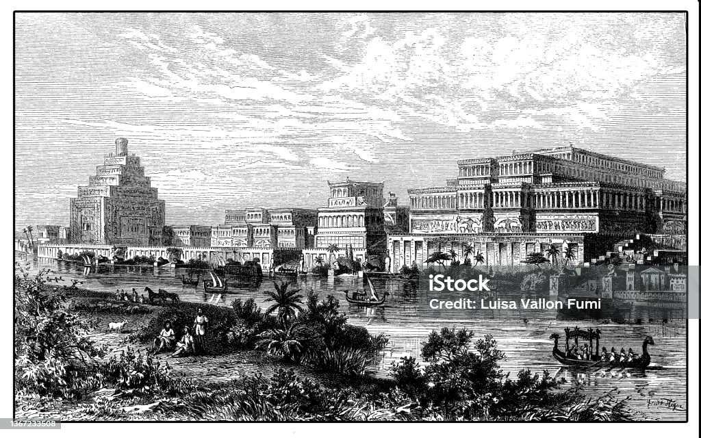
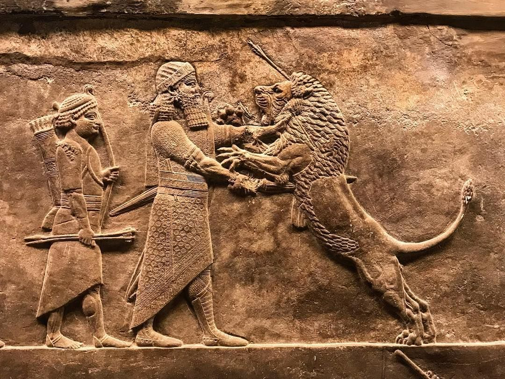

.png)
Imperio Asirio ⤐
Los Asirios fueron una de las civilizaciones más influyentes del antiguo Oriente Próximo, conocidos por su poder militar, avances arquitectónicos y sistemas administrativos. Surgieron en la región de Mesopotamia, estableciendo un imperio que dominó gran parte de la actual Irak, Siria y Turquía. Desde pequeñas ciudades-estado hasta convertirse en uno de los imperios más formidables de la antigüedad, los Asirios dejaron un legado que influyó en civilizaciones posteriores. Sus innovaciones en ingeniería, escritura y organización estatal fueron clave para su expansión y dominio.En esta página exploraremos su historia, cultura, gobierno, ejército y su impacto en el mundo antiguo, descubriendo cómo moldearon la civilización mesopotámica.

El nombre "Asiria" proviene de la ciudad de Assur, que también era el centro religioso de la civilización. Los Asirios veneraban a Assur, su dios principal, y creían que su expansión territorial era una misión sagrada. Inicialmente, su economía se basaba en la agricultura, ganadería y comercio, pero con el tiempo, los tributos y el botín de guerra se convirtieron en sus principales fuentes de riqueza.
Los Asirios fueron una de las civilizaciones más influyentes de la antigua Mesopotamia, destacándose por su poder militar, su avanzada organización administrativa y sus contribuciones culturales. Su historia se remonta al III milenio a.C., cuando un grupo de comerciantes semitas se estableció en la región y fundó la ciudad de Assur, que más tarde se convertiría en el corazón de su imperio. A lo largo de los siglos, los Asirios evolucionaron de una sociedad comercial a una potencia militar dominante. Su capacidad para desarrollar nuevas armas y tácticas de guerra les permitió expandir su territorio y consolidar su dominio sobre vastas regiones del Oriente Próximo. Durante su apogeo, su imperio abarcaba desde la Baja Mesopotamia hasta Egipto, convirtiéndose en una de las civilizaciones más temidas y respetadas de su tiempo.

Los Asirios fueron pioneros en el uso de armas de hierro, lo que les dio una ventaja significativa sobre sus enemigos. También desarrollaron un ejército profesional, con soldados entrenados específicamente para la guerra, lo que les permitió conquistar y mantener el control de vastos territorios. Además de su destreza militar, los Asirios dejaron un legado cultural impresionante. Construyeron palacios monumentales, decorados con relieves que narraban sus victorias y conquistas. También fueron expertos en la construcción de ciudades fortificadas y sistemas de canales para mejorar la irrigación y el transporte
El Imperio Asirio en su Máximo Esplendor Durante el Imperio Neoasirio (911-609 a.C.), los Asirios alcanzaron su mayor expansión. Gobernantes como Tiglat-Pileser III, Senaquerib y Asurbanipal llevaron a cabo campañas militares que consolidaron su dominio sobre el Oriente Próximo. Sin embargo, su imperio finalmente cayó en el 612 a.C., cuando los Babilonios y Medos destruyeron la capital, Nínive, marcando el fin de una era.